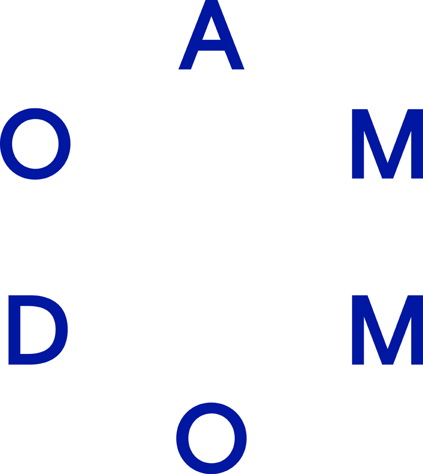
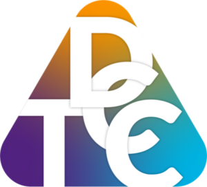
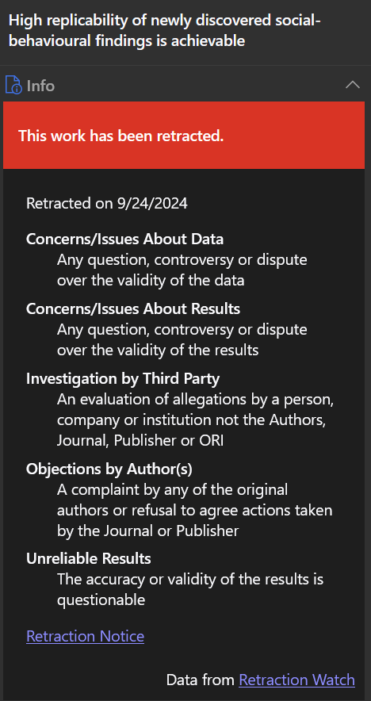
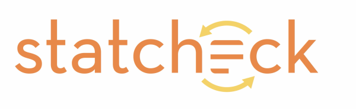
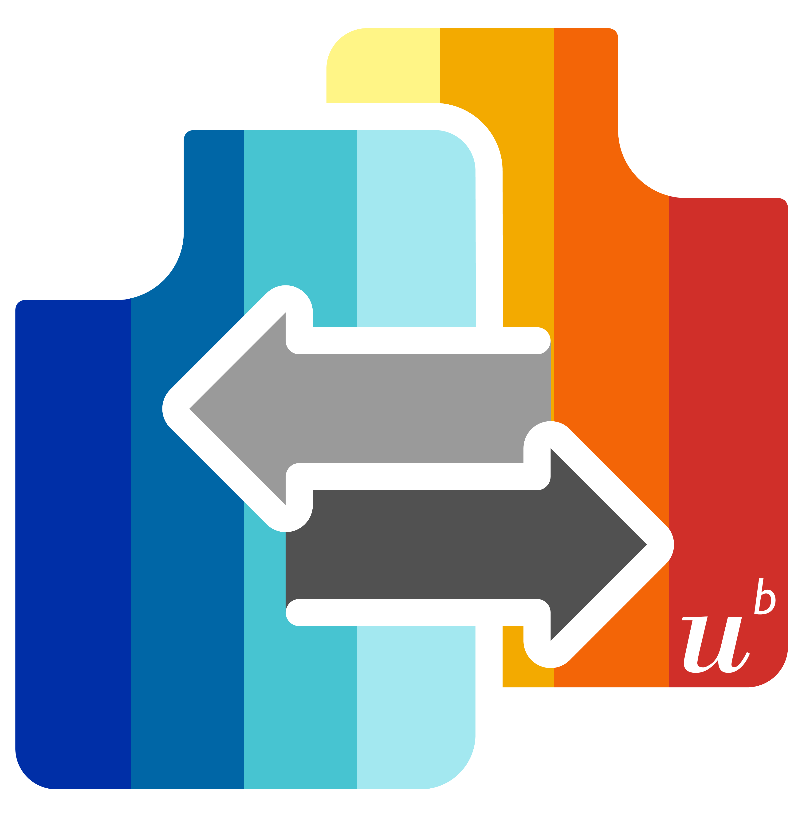
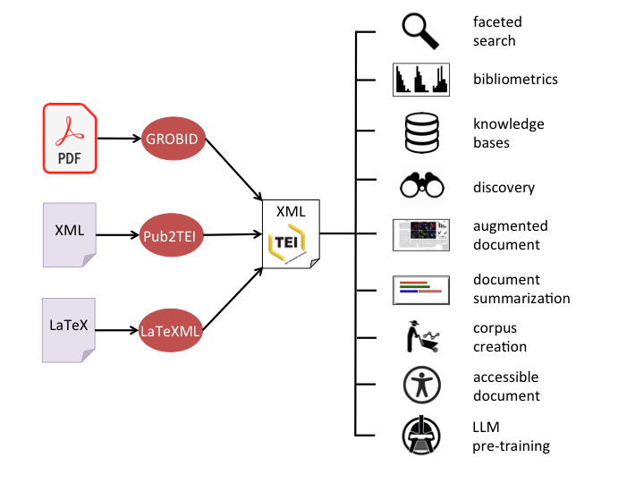
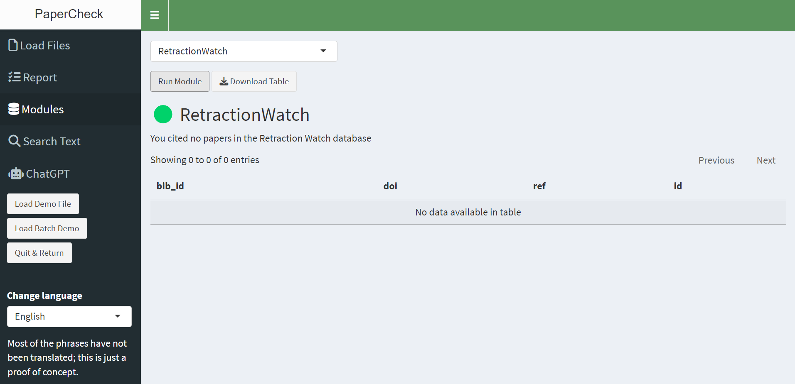
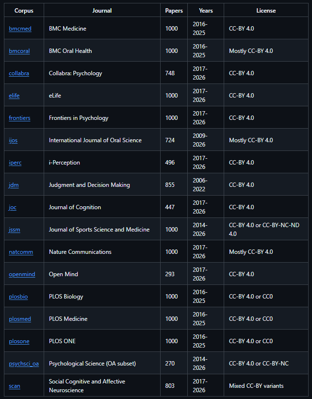
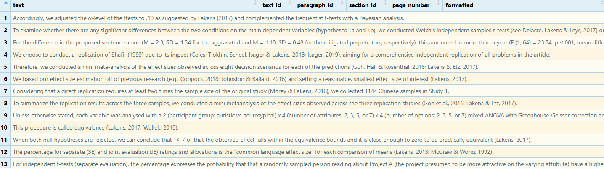

An automated tool to improve scientific manuscripts
2026-06-25
Metacheck is partly financed by the Dutch Research Council (NWO) via VICI grant VI.C.241.013, the Thematic Digital Competence Centre Social Sciences & Humanities grant ICT.001.TDCC.018, and the Ammodo Science Award 2023 for the Social Sciences


I’ve spent a decade writing papers on how people should improve their research practices.
Amazingly, there are people who have not read all my papers. 😉
We are all busy, and our memory is limited: I am starting to forget my own advice about best practices from 10 years ago.
In Human Factors research, there are the ISO‑9001 standards for quality management systems.
Organizations should:
we can rely on automation
An example is CRAN check — an automated tool that checks for common mistakes when people submit R packages.
If it works for software packages, why not for scientific manuscripts?
There are already a number of tools that perform automated checks on scientific manuscripts.
Zotero automatically checks whether you cite a retracted article.


Statcheck by Michelle Nuijten and Sascha Epskamp automatically recomputes reported p-values from the test statistics in a paper.
Statcheck is already incorporated into Metacheck!

RegCheck by Jamie Cummins automatically compares preregistrations against the paper.
The metacheck module that incorporates RegCheck is done. It also works locally!
We are building a module-based tool to automate checks for anything we can.
It’s an R package. Anyone can add modules — checks for different fields.
All checks, one place, one report.
Run it yourself, or batch-check at scale.
Metacheck reads in a PDF using GROBID. But Jakub Werner is also building bibr.

We don’t need to reinvent every check — we can build in existing tools.

🚫Flag citations. Incoherent, or to retracted or replicated papers
🔢Statcheck
recompute & verify p-values
🗣️Marginal significance
flag wrong-interpretation language
📋Peregistration
Retrieve preregistration content
📐Effect size
check for effect sizes & recompute them
⚡Power
check correctly reported power analyses
📁Repo-check
check repositories for a README & more
💻Code-check
flag absolute paths & files missing from repo
Researchers who collect data should indicate if they received ethics approval. We check for live data collection, and an ethics statement.
In Eindhoven we are working on making meta-data for all ethics approvals public.
Check data repositories, load data files, check if data is FAIR and well documented.
Building on the work of Levi Baruch, who is going to defend his master thesis soon.
Researchers can log their own papers (or papers by others) that are commonly miscited.
5% of citations is outright incorrect, another 5% leaves out important details. Building on the work of Mink Veltman, who is also going to defend his master thesis soon.
We have made open access papers available from 18 open access journals with more than 15.000 papers (as well as instructions to download other papers).

A growing resource of open access papers.

Use of LLMs is always optional. All modules can be run without connecting to the internet.
A local Ollama installation can run the power module of RegCheck (or retrieve info from papers for you)
The goal is not to detect everything perfectly. Like a spelling checker, the goal is to detect enough accurately so the tool overall is useful.
We will need to educate users about how tools work (they expect perfect accuracy, but checking a data repository is more difficult than checking a word, and your spelling check is wrong a lot!)
We are happy to work with you if you want to use Metacheck:
running checks at scale across a literature
ceate checks useful for your field
We will now work through The Metacheck Manual together, with live, runnable code.
Open RStudio and follow along: https://scienceverse.github.io/metacheck_book/
Install from GitHub with pak (or the dev branch for the newest modules):
The easiest way to start: launch the Shiny app, upload a PDF, get a report.
Metacheck can run fully offline — nothing leaves your machine. Useful for editors / reviewers handling unpublished manuscripts.
A detected local GROBID server is used automatically. The same idea applies to LLMs (run locally with Ollama).
Step 1 is always: turn a PDF into a paper object. convert() does PDF → JSON (once), read() loads it.
Point at a local GROBID server with api_url = "http://localhost:8070".
read() returns a structured scivrs_paper — a list of tables. Everything operates on this.
info — paper-level metadataauthor — one row per authortext — one row per sentencesection — headings + section typeurl — links in the textbib — the reference listxref — citation cross-referencesfigure / table — figures & tableseq — extracted statisticsbib_match — CrossRef matchesconvert() and read() also take a folder or a vector of paths → a list of paper objects (a paperlist).
Most functions and every module accept a single paper or a paperlist — the same code scales from one paper to a whole corpus.
One core operation underlies most modules: search a paper’s text for matching sentences.
Expand context around hits with text_search(paper, "metacheck") |> text_expand(paper, plus = 1, minus = 1).
Develop patterns iteratively: start broad, inspect, tighten.
Use anti_join() to see what you excluded, and count(..., sort = TRUE) to spot outlier papers using a term in another sense.
Most of Metacheck needs no AI. A few modules (power, prereg/reg-check) can do more with an LLM — and you can query papers directly.
Philosophy: LLMs only classify existing text, never judge quality. Recommended setup runs locally so no data leaves your machine.
llm()Narrow the text with text_search() first, then ask a question — fewer, cheaper, faster queries.
Add an ellmer type spec (or ask for JSON) for structured output, then json_expand() it into columns. A cap (llm_max_calls(), default 30) guards against runaway costs.
Pre-built corpora of open-access papers, already converted — for validating and comparing modules.
One verb: module_run(paper, "module_name"). Returns a list with a traffic_light, summary_text, and a table.
Output is a prompt for human judgement, never a verdict. Treat flags as “look here”.
Finds power-analysis sentences and classifies them a priori / sensitivity / post-hoc (regex only).
Finds OSF / AsPredicted links, retrieves the preregistration, and organises it into one standardised template — easy to compare against the paper.
Makes live network calls to OSF / AsPredicted. Cannot read unstructured templates or uploaded-document preregistrations.
reg_check goes further — an LLM judges, dimension by dimension, whether the paper deviates / is consistent / has insufficient info.
The deviation_information column quotes both documents — it points a reviewer to the exact sentences. Needs REGCHECK_API_TOKEN; one LLM call per dimension (slow).
Searches for an ethics approval statement (IRB, REC, IACUC, Helsinki, waivers…), across many phrasings and languages. Fully offline.
Only flags a missing statement when the paper looks like it involved live data collection — so re-analyses and simulations are not penalised (needs_ethics).
Lists sentences that dress up a non-significant result: “marginally significant”, “approaching significance”, “trending toward”… Fully offline.
Six families of phrasing (one regex). Validation: 63% PPV, misses ~42% — a first-pass highlighter for human review, based on Hankins’ catalogue.
Four fast, offline checks on reported statistics:
| Module | Flags |
|---|---|
stat_check |
p-value inconsistent with the test statistic (Statcheck; t & F tests, APA format) |
stat_p_exact |
imprecise p-values (p < .05) and impossible p = .000 |
stat_p_nonsig |
non-significant p-values, to check they aren’t read as “no effect” |
stat_effect_size |
t / F tests reported without an effect size |
Finds repository links (OSF, GitHub, ResearchBox, Zenodo), lists the files, and reports what was shared. Live network calls.
.zip whose contents can’t be inspectedReads the actual code files repo_check finds (R, SAS, SPSS, Stata) and checks reproducibility.
Flags: absolute paths (C:/Users/me/...), missing loaded files, parse errors, scattered library() calls. file_limit caps how many files (default 20).
Three modules cross-reference the paper’s citations against external databases (all need internet):
ref_retraction — cited papers in the Retraction Watch database (rw_update() to refresh)ref_replication — cited originals with a recorded replication in FLoRA (show_outcomes = TRUE)ref_pubpeer — cited papers with PubPeer comments (Statcheck comments ignored)repo_check / code_check can point at a local folder instead of an online repo — your own code, a reviewer’s zip, or an unsupported service (GitLab, Figshare, Dataverse).
On OneDrive / iCloud / Dropbox: choose “Always keep on this device” first, or every file download will be slow.
# only local, skip all online lookups
module_run(test_paper(), "code_check", local_path = path, local_only = TRUE)
# raise the 20-file cap
module_run(test_paper(), "code_check", local_path = path, file_limit = Inf)
# download an OSF project (nested components) to a folder, then check it
osf_file_download(osf_id = "pngda", download_to = ".",
max_file_size = 1, max_download_size = 10)Run as a two-step pipeline (repo_check → code_check) so slow cloud downloads happen once.
Run LLM modules with no internet, no API key, no cost — papers stay on your machine. The 9b model wants ~16 GB RAM; the smaller 3b runs in ~8 GB. No GPU required.
First query is slow (model loads into memory); later ones are fast. Verify at http://localhost:11434.
Run the prereg comparison on your own machine — no text leaves it. One-time server setup beside Ollama.
The manual continues with writing your own module and the full function reference:
Reach out if you want to build a module for your field or run checks at meta-scientific scale.
Metacheck
Stats Textbook
Podcast
Graduate School